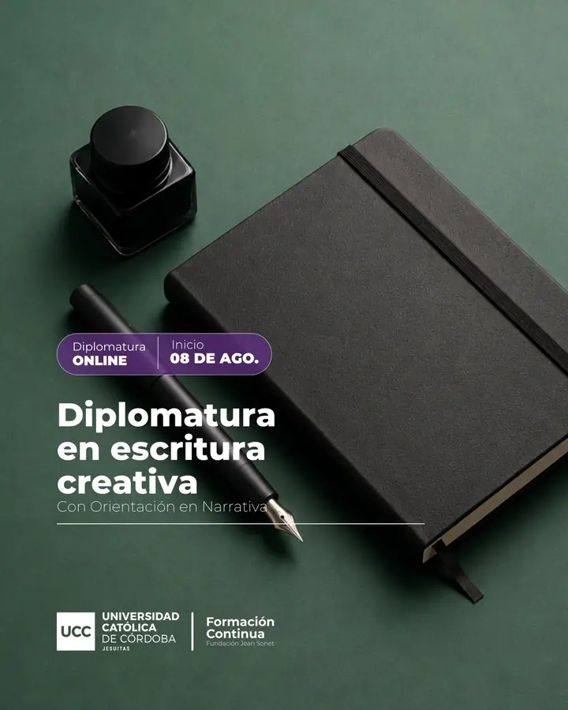

En agosto de 2023, lanzamos la primera Diplomatura en Escritura Creativa de la Ciudad de Córdoba con certificación académica de la UCC.
Se trata de una propuesta de formación superior para explorar las distintas posibilidades que nos ofrece el pensamiento creativo, el lenguaje y la comunicación. Se trabaja con saberes expertos en torno al arte de la poética y la ficción, con el fin de obtener herramientas profesionales para la práctica de la escritura. El objetivo principal consiste en profundizar el conocimiento sobre los procesos creativos, y adquirir principios, metodologías y recursos técnicos que pertenecen al oficio del escribir.
Si te interesa participar de la 4.ª edición, que comienza en agosto próximo, enviá tus consultas en el siguiente enlace.